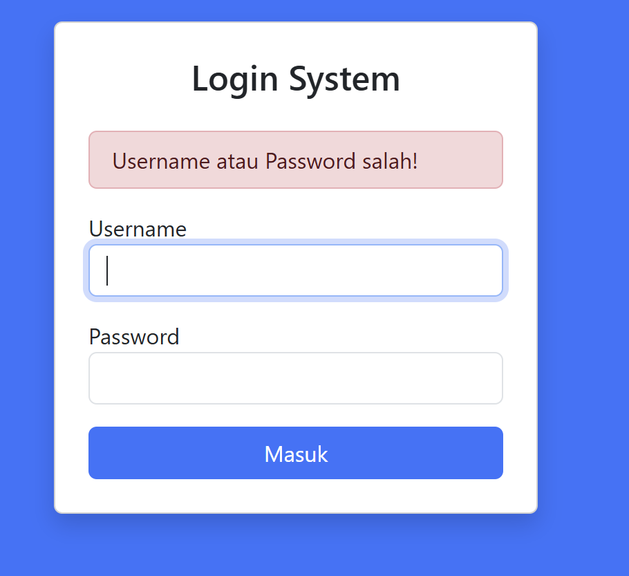
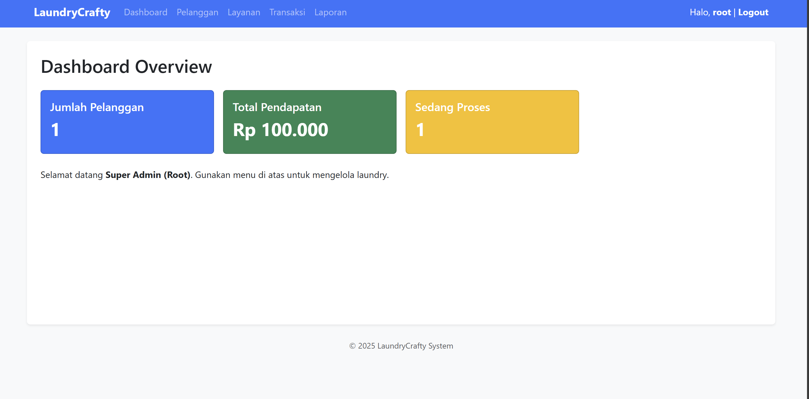
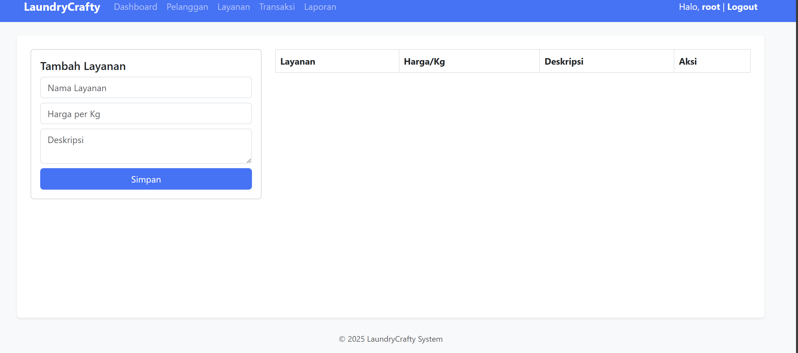
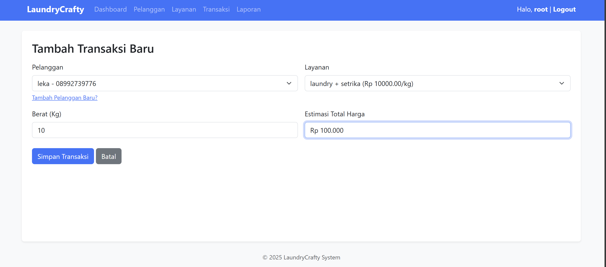
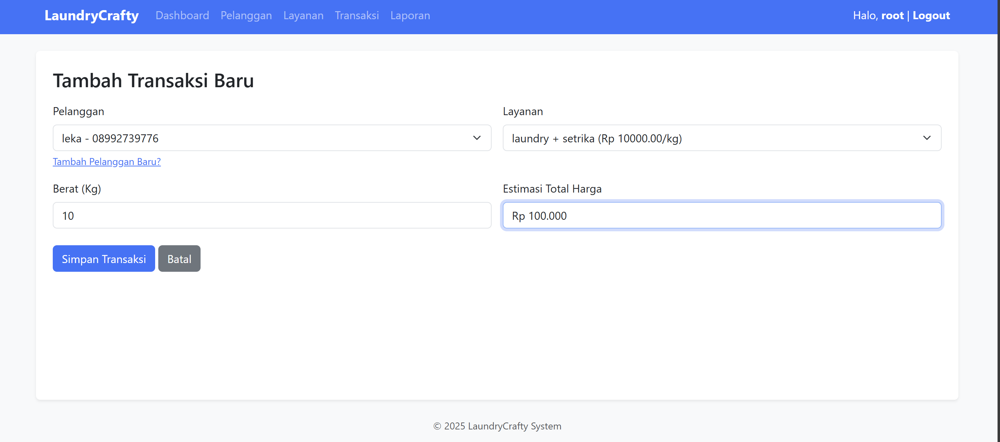

Latar Belakang
Pengelolaan data pada usaha jasa laundry seringkali mengalami kendala jika dilakukan secara manual, seperti risiko hilangnya nota, kesalahan perhitungan biaya, dan kesulitan dalam melacak status cucian pelanggan. Oleh karena itu, dibuatlah sistem informasi berbasis web ini.
Tujuan
- Mempermudah pencatatan transaksi laundry.
- Mengelola data pelanggan dan layanan dengan rapi.
- Menghitung total harga secara otomatis untuk mencegah kesalahan.
Teknologi
- PHP Native (v8.x)
- MySQL / MariaDB
- Server Apache (XAMPP/Laragon)
- Visual Studio Code
Analisis dan Perancangan
Fitur Utama
- Login Admin: Keamanan menggunakan hash password.
- Dashboard: Statistik ringkas pendapatan dan jumlah pelanggan.
- Transaksi: Input data cucian dan hitung otomatis.
- Laporan: Melihat rekap pendapatan.
Alur Kerja
- Admin login ke sistem.
- Admin menambahkan data pelanggan baru.
- Admin membuat transaksi (memilih pelanggan & layanan).
- Sistem menghitung total bayar.
- Status cucian diupdate (Proses -> Selesai).
Struktur Database
Nama Database: laundrycrafty
Tabel User (Admin)
| Kolom | Tipe Data | Fungsi |
|---|---|---|
| id_user | INT (Auto Increment) | ID Unik |
| username | VARCHAR(50) | Untuk Login |
| password | VARCHAR(255) | Password Terenkripsi |
Tabel Transaksi
| Kolom | Tipe Data | Fungsi |
|---|---|---|
| id_transaksi | INT | ID Transaksi |
| nota | VARCHAR(50) | Kode Invoice |
| total_harga | DECIMAL | Total Biaya |
| status | ENUM | Status Pengerjaan |
Implementasi Kode
Koneksi Database (koneksi.php)
<?php
$host = "localhost";
$user = "root";
$pass = "Maleka_0809";
$db = "laundrycrafty";
$koneksi = mysqli_connect($host, $user, $pass, $db);
?>
Logika Login (auth_login.php)
Kode ini memverifikasi password yang diinput dengan hash di database.
if ($data && password_verify($password, $data['password'])) {
$_SESSION['user'] = $data;
header('Location: index.php');
} else {
echo "Login Gagal";
}
Tampilan Antarmuka
Halaman Login
Halaman Dashboard
Halaman Transaksi
 

Kesimpulan
Aplikasi LaundryCrafty telah berhasil dibuat dan berfungsi dengan baik. Sistem ini dapat membantu pemilik laundry dalam mencatat transaksi harian, mengelola data pelanggan, dan melihat laporan pendapatan tanpa perlu pencatatan manual.